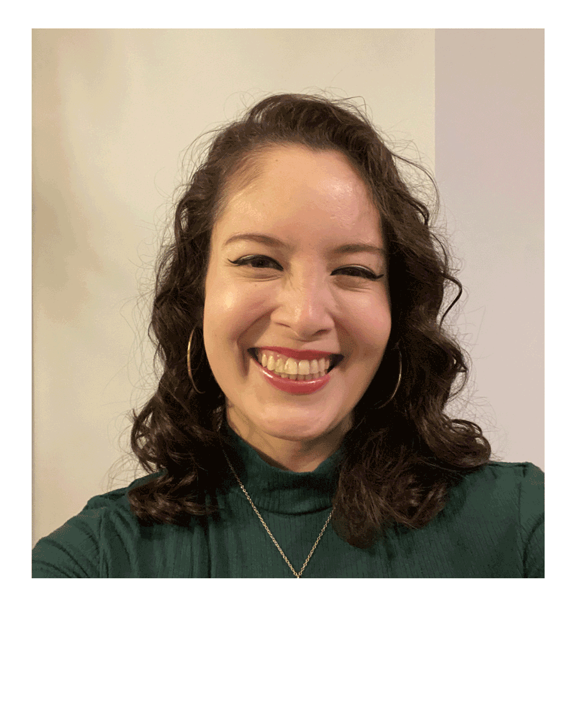

Hi, I'm Cinthya.
I help teams figure out what's worth building, then get it shipped from first sketch to launch.
Product Manager. I spent 4.5 years leading product at LOGO.com, where I joined as the first product person. I built the product function from the ground up: I defined the roadmap, set the metrics we used to measure success, and took ideas from the first mockup all the way to launch.
Project Manager. In a startup you wear many hats, and I was never only the product manager. Throughout my career in startups I've owned execution from start to finish: organizing teams, keeping everyone aligned, and making sure what we planned actually shipped.
Designer at heart. I started as a Product Designer and spent more than 6 years in the craft. That's why I hold a high quality bar. I know what a good design and a good app require because I've built them myself.
AI learner. AI is part of my work every day, and I'm still learning and still amazed by it. I use it to build systems, organize my days and make my work more efficient, and also as a partner in my creative process. Learn more about it here.

Projects
From link in bio to AI website builder.
Show people their brand before asking them to pay.
Logos no one else can have.
18 automations that made me a faster PM.
My own app.
About me
Recent experience
Product Manager / Project Manager · LOGO.com
Apr 2022 — Sep 2026LOGO.com gives entrepreneurs the tools to start a business, with 1M+ monthly visitors. I owned the vision, goals and roadmap for every product, from the logo editor and website builder to domains and AI tools. I built the processes and analytics from the ground up, took the website builder from Link in Bio to a multi-agent AI builder, grew monetization through upsell and bundling experiments and managed partnerships like Wix and Printful.
Product Designer · Chorefree Living
Sep 2019 — Oct 2021A home-services booking platform connecting realtors and property managers with cleaning and maintenance providers. I redesigned the website into a seamless booking experience that cut ordering time to 90 seconds and grew monthly recurring customers, and led product iteration with finance, sales and operations.
UX/UI & Product Designer · Sugar Design Group
May 2019 — Sep 2019A design agency serving clients across the US and Canada. I created user flows, UI prototypes and design systems for 10+ clients.
Education
- Bachelor of Product DesignTecnológico de Monterrey
- Diploma, Innovation & EntrepreneurshipTamwood Careers
- Digital Marketing BootcampAlacrity Canada
- CAPM and PMPIn progress
Main skills
Product
AI
Design
Tools
Outside work
I'm Mexican
I grew up in Mexico City and have called Vancouver home for 7+ years. I'm always missing the tacos, though.
I'm an entrepreneur
Building my own projects taught me to think like an owner, not just an employee.
I love to dance
I've been part of Mexican folk and Irish dance companies. I've danced everything! (Latin, jazz, tap, samba, you name it!)
Board and video games
Horror video games are my favorite, and I love board game nights with friends. Lately, I've been obsessed with Root.